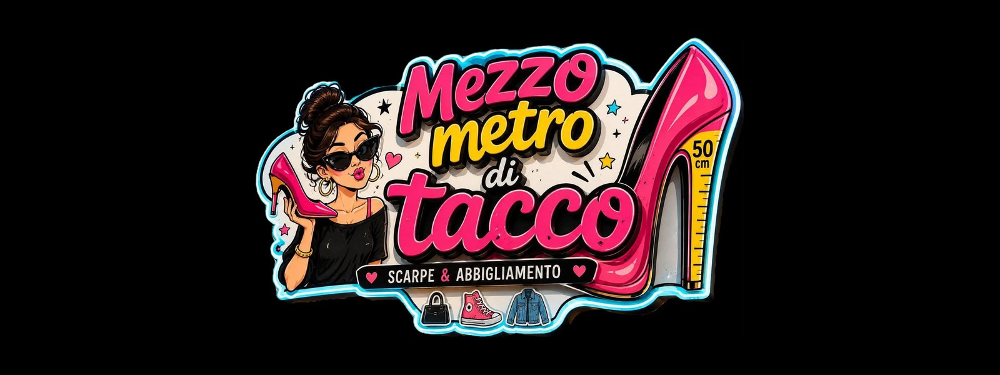
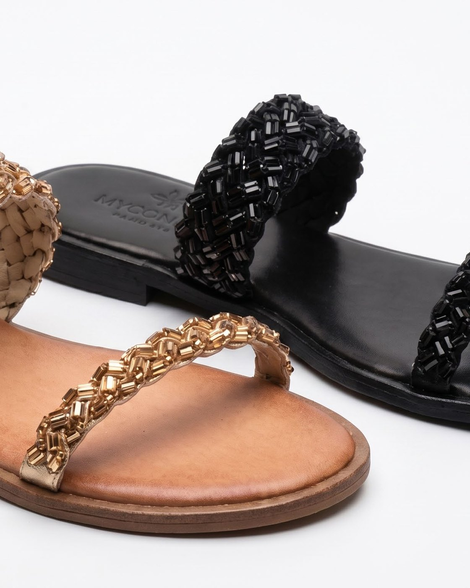
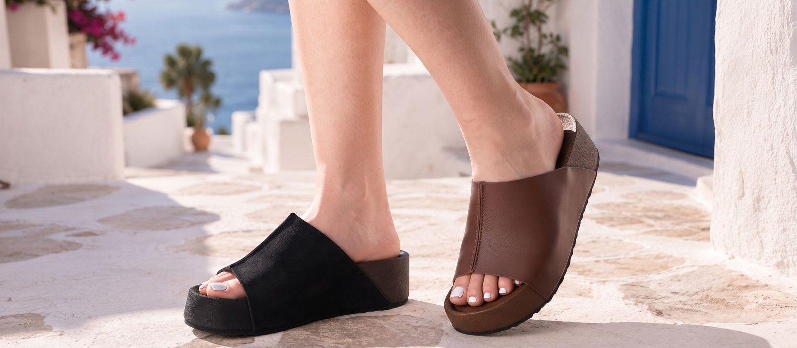
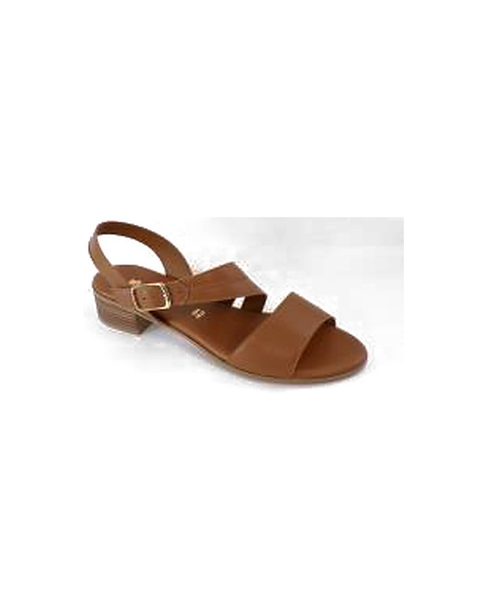
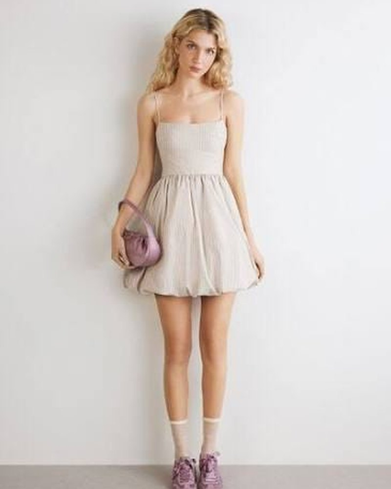
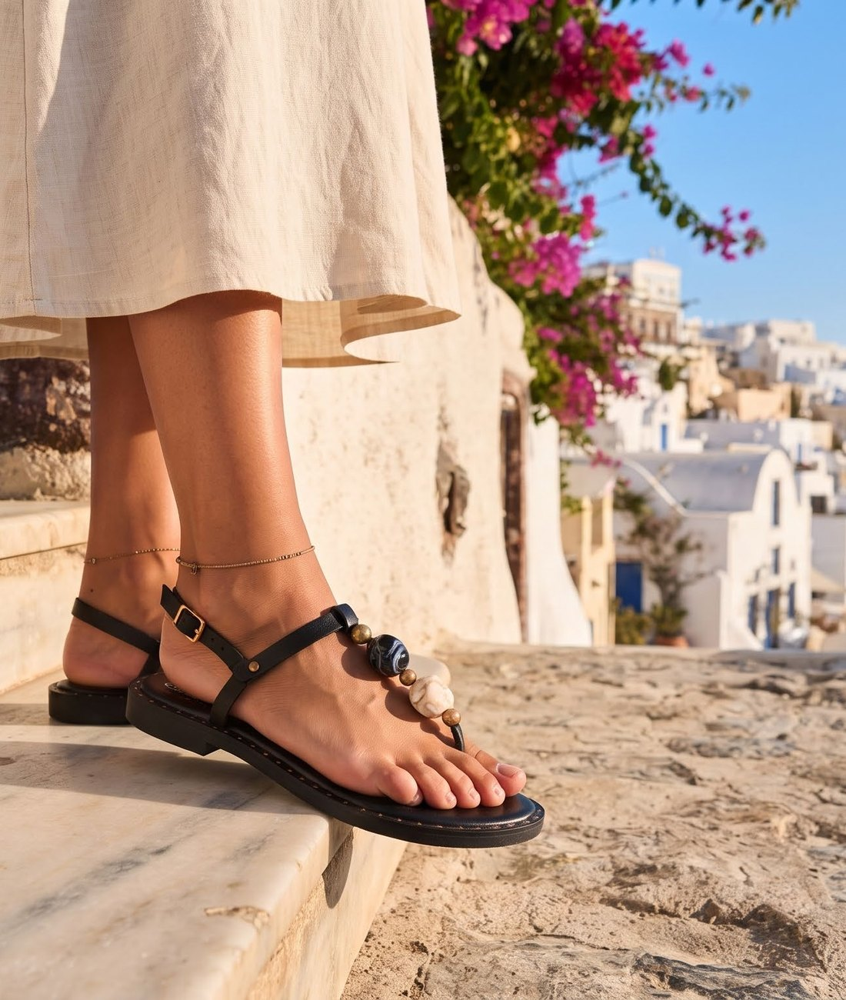

Scarpe e abbigliamento a Lido degli Scacchi, dal 27 marzo 2027
Sandali, stivaletti, texani e abiti da donna. Via Adamello 10, sulla via principale del mare.
Guarda i modelli e chiedi la tua misura su WhatsApp.

Inaugurazione sabato 27 marzo 2027
Dalle 10:00 alle 23:00, in via Adamello 10.
Sconto per chi compra quel giorno, e un buffet aperto a tutti.
Il catalogo
Ogni stagione scegliamo i modelli che vanno di più.
Filtra per categoria e vedi solo quello che cerchi.
Filtra per categoria
Come ordinare
01
Scegli il modello e la tua misura.
02
Tocca «Richiedi prodotto»: WhatsApp si apre già scritto.
03
Ti rispondiamo se c’è, e come averlo.
Dall’altra parte non c’è un centralino: ci siamo noi due.
La misura
Non sai che numero prendere?
Ogni modello calza in modo diverso.
Dicci il numero che porti di solito e con quale scarpa ti trovi bene.
Ti diciamo noi quale misura ordinare.

Le scarpe
Scarpe italiane
La maggior parte dei modelli arriva da calzaturifici italiani.
Il campionario lo scegliamo noi, uno per uno, prima di ogni stagione.


Abbigliamento donna
Abiti corti e lunghi, per tutti i giorni e per le occasioni.
Il reparto apre insieme al negozio.
Chiedi taglie e modelli in chat, come per le scarpe.

Il negozio
A gennaio prendiamo le chiavi e cambiamo i locali da capo.
Fuori arriva l’insegna nuova, quella del logo.
A marzo il negozio riapre con un altro nome e un’altra faccia.

Il nome
Perché «Mezzo Metro di Tacco»
Mezzo metro sono cinquanta centimetri di tacco: un’esagerazione, e lo sappiamo.
Il nome ce lo siamo scelto che non l’avesse nessun altro.
Cercalo su Google: trovi solo noi.
Chi siamo
Siamo Johnny e Claudia, 45 anni tutti e due.
Riapriamo un negozio che sta su questa via da oltre quarant’anni.